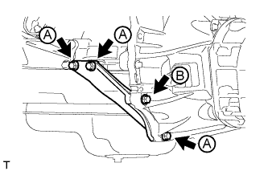

МЕХАНИЧЕСКАЯ ТРАНСМИССИЯ В СБОРЕ > УСТАНОВКА |
| 1. INSTALL TRANSFER ASSEMBLY |
Для моделей с 1KD-FTV:
Закрепите раздаточную коробку в сборе с помощью 8 болтов и 2 кронштейнов.
Кроме моделей с 1KD-FTV:
Закрепите раздаточную коробку в сборе с помощью 8 болтов и кронштейна.
| 2. INSTALL MANUAL TRANSMISSION UNIT ASSEMBLY |
Align the input shaft with the clutch disc and install the transmission to the engine.
Install the 4 bolts.
| 3. INSTALL STIFFENER PLATE LH |
|  |
Install the stiffener plate with the 4 bolts.
| 4. INSTALL STIFFENER PLATE RH |
Install the stiffener plate with the 4 bolts.
| 5. INSTALL REAR NO. 1 ENGINE MOUNTING INSULATOR |
Install the mounting insulator with the 4 bolts.
| 6. INSTALL NO. 3 FRAME CROSSMEMBER SUB-ASSEMBLY |
Install the frame crossmember with the 4 bolts and 4 nuts.
Install the 4 bolts to the rear No. 1 engine mounting insulator.
| 7. INSTALL FRONT SUSPENSION MEMBER BRACKET LH |
Install the member bracket with the 4 bolts.
| 8. INSTALL FRONT SUSPENSION MEMBER BRACKET RH |
Install the member bracket with the 4 bolts.
| 9. INSTALL STARTER ASSEMBLY |
Install the starter (See page Нажмите здесь).
| 10. CONNECT CLUTCH RELEASE CYLINDER ASSEMBLY |
Connect the release cylinder with the 2 bolts.
| 11. INSTALL TRANSFER AND MANUAL TRANSMISSION BREATHER HOSE SUB-ASSEMBLY |
Install the 3 breather hoses to the shift lever retainer and transfer adapter and attach the clamp.
| 12. CONNECT WIRE HARNESS |
Connect the 2 connectors and attach the 4 clamps.
| 13. INSTALL FRONT EXHAUST PIPE ASSEMBLY |
Install the front exhaust pipe (See page Нажмите здесь).
| 14. INSTALL PROPELLER SHAFT ASSEMBLY |
Install the propeller shaft (See page Нажмите здесь).
| 15. INSTALL FRONT PROPELLER SHAFT ASSEMBLY |
Install the front propeller shaft (See page Нажмите здесь).
| 16. ADD MANUAL TRANSMISSION OIL |
| 17. INSTALL TRANSFER CASE LOWER PROTECTOR |
Install the transfer case lower protector with the 4 bolts.
| 18. INSTALL FLOOR SHIFT SHIFT LEVER ASSEMBLY |
Cover the shift lever cap with a cloth.
Press down on the shift lever cap and rotate it clockwise to install it.
| 19. INSTALL NO. 1 SHIFT AND SELECT LEVER BOOT |
Install the boot with the 4 screws and 2 clips.
| 20. INSTALL CONSOLE PANEL SUB-ASSEMBLY |
Подсоедините все разъемы.
Введите в зацепление 8 фиксаторов и 2 захвата и установите облицовку панели пола.
| 21. INSTALL SHIFT LEVER KNOB SUB-ASSEMBLY |
| 22. CONNECT CABLE TO NEGATIVE BATTERY TERMINAL |